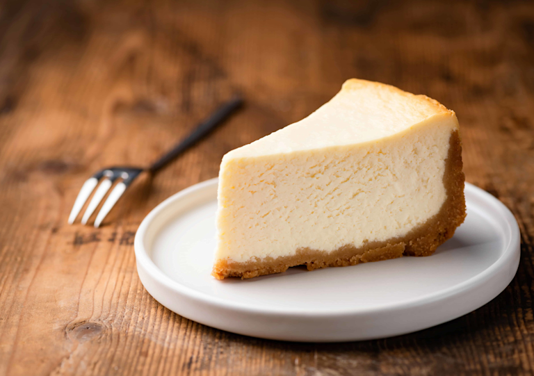

Cheesecake
Un dessert américain onctueux, frais et super classe !
Ingrédients :
- 200g de biscuits (type spéculoos ou petit beurre)
- 80g de beurre fondu
- 500g de fromage frais (type Philadelphia)
- 100g de sucre
- 3 œufs
- 1 sachet de sucre vanillé
- Le jus d’un demi-citron
Préparation :
- Mixe les biscuits et mélange avec le beurre fondu.
- Tasse le tout dans un moule pour faire la base et réserve au frais.
- Mélange le fromage avec le sucre, la vanille, les œufs et le citron.
- Verse sur la base biscuitée et fais cuire 50 min à 160°C.
- Laisse refroidir puis place au frigo minimum 4h (meilleur le lendemain).
← Retour à l'accueil